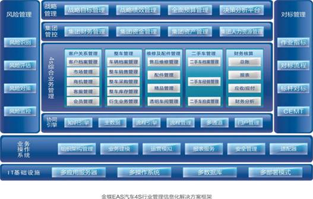

汽车4S行业管理信息化解决方案
金蝶EAS汽车4S行业管理信息化解决方案面向汽车4S集团企业，在深入理解汽车4S行业管理信息化需求的基础上，与汽车4S行业的发展趋势和行业管理特点紧密结合，充分考虑中国汽车4S集团所面临的现实环境以及 诸多个性化需求，通过客户关系管理、整车管理、维修及配件管理、二手车管理等应用，支持4S企业综合业务 运营；通过企业战略管理、风险管理与内部控制、集团财务、集团资金、集团资产、集团人力资源管理和集团 协同平台等应用，提高4S集团管控能力与决策水平；通过搭建集成、统一、可配置和可扩展的信息化平台，实 现汽车4S集团业务一体化、财务业务一体化和集团管控一体化的管理目标，有效推动4S集团实现管理模式和 业务流程的创新，提升企业核心竞争力。

核心应用
- 风险管理与内部控制
提供基于COSO框架、以战略为核心的全局性的风险与内控管理平台，包括企业基础信息、风控管理门户、预 警中心、风险管理、控制管理和企业监控六大功能，帮助4S企业洞察风险与机遇，提升经营效率和效果。
- 集团财务管理
通过对集团财务基础政策、集中核算、预算管理、财务报告、战略管理等核心内容进行统一整合，实现集团财 务政策的集中统一，规范财务核算，加强集团财务管理，实现集团资源整合，发挥4S集团的整体效益，帮助4S集团实现价值最大化的目标。
- 集团资金管理
满足汽车4S集团多种资金管理模式的需求，支持资金计划、资金结算、投融资、票据、利息计算、资金监控分 析和银企互联等核心业务的一体化管理，提供4S集团统一的资金管理平台，帮助汽车4S集团强化资金的集约化管理，加快资金周转，提高资金使用效益。
- 集团资产管理
支持4S集团维修设备等资产的全生命周期管理，通过统一资产政策、统一资产管理流程，帮助4S集团实现资 产报表的自动汇总、从集团到下级的资产增减、调拨、数量、金额等的全方位资产管理与分析。
- 集团人力资源管理
通过搭建汽车4S集团统一的人力资源管理平台，将现有标准成熟的人力资源管理体系进行快速复制，有力扭转汽车4S行业人力资源管理水平普遍偏低的现象，有效支持汽车4S集团的发展战略。
- 4S综合业务管理
涵盖客户关系管理、整车销售管理、维修及配件管理、二手车管理等内容，紧密围绕客户、车辆、人员三大核心要素展开，为4S集团搭建统一、集成的综合业务管理平台，提升4S集团综合经营水平和管理效率，实现4S集团提高经营效益的目标。
- 商业智能管理
适应4S集团企业经营管理特点，实用高效，囊括了管理驾驶舱、决策分析模型和分析主题等丰富的内容，通过多维度的经营指标分析、过程监控、经营预警等内容，满足汽车4S集团企业各管理层面经营分析和经营决策辅助支持的需求。
- 系统集成管理
金蝶BOS系统根据4S集团实际管理需要，实现基于门户应用集成、业务流程集成、实时数据集成和数据转换 集成等不同程度的集成应用，为4S集团提供集成、可扩展的信息化管理平台。
客户价值
１.过深入的业务主题分析、关键经营指标监控和运营模型分析，提供决策层“一站式”的综合决策门户，通过丰富的管理和业务分析，快速、准确地为4S集团管理层提供企业业务营运数据、财务数据，为管理层 进行决策提供经营决策相关的信息支持。
２.立汽车4S集团统一的财务核算体系，规范集团财务信息收集，提高集团财务信息收集效率；通过财务、 业务一体化，强化4S集团对下属门店的收入管控；提高集团报表编制效率，为集团决策提供准确的财务信息支持。
３.立4S集团资金集中监控体系，统一集团融资管理，降低集团整体资金成本，通过多维度的资金分析，有 效监控集团资金存量、流量和流向，有效规避集团金管理风险。
４.实汽车4S集团企业统一的人力资源管控模式，实现集团级一体化的人力资源规划和薪酬管控，规范人事 事务、薪酬调整、绩效管理、招聘管理、培训管理流程，有效记录人力资源管理的业务过程和历史信息， 提供人力资源管理决策依据。
５.汽车4S集团的车辆采购管理、车辆库存管理、车辆销售管理、衍生业务管理，售后维修管理，精品及配 件管理等业务搭建集成统一的内部运作平台，提高4S店业务管理效率，强化4S集团的经营管控。
６.供“以消息为中心，以流程为驱动，以应用为核心”的综合业务与应用管理系统，实现集团总部与各展 厅、各部门之间、各岗位之间更有效率的工作协同，提高4S集团管理效率。
７.持汽车4S集团多家门店、不同业务系统的整合和集成，消除集团信息孤岛，构建灵活、集成、可扩展的 信息化应用平台，极大地满足汽车4S集团业务流程灵活多变和行业化应用的个性化需求。
整车管理
整车销售是汽车4S店最主要的经营内容，包括整车采购、整车销售、整车库存、整车结算等在内的整车管理工作更是4S店经营管理的重要内容。随着汽车4S集团规模日益扩张，4S店经营范围逐渐扩大、经营内容多样 化，汽车4S集团的整车管理也面临各种挑战：
- 如何在集团内充分共享车辆信息，提高整车管理效率？
- 如何规范车辆管理流程，提高车辆采购、库存、调拨等业务操作效率？
- 如何通过灵活的价格策略，促进整车销售，确保销售毛利？
- 如何利用集团优势统一管理厂家商务政策，帮助各4S店实现返利最大化？
- 如何高效办理车辆销售相关衍生业务，提升新车销售满意度？
业务流程
金蝶4S行业整车管理支持从整车采购订单、新车首检、车辆入库、销售订单、销售出库、衍生业务处理到销售结算的完整车辆管理过程，通过规范车辆管理流程，共享整车管理相关信息，强化整车业务的协同管理，提高 整车管理效率，强化集团对下属企业的经营管控。
应用价值
- 规范整车采购、入厂检验(PDI)、车辆入库、整车销售、车辆出库、整车结算等完整的车辆 管理流程，支持全程整车信息查询与跟踪，提高整车管理效率；
- 支持集团统一管理厂家商务政策，保证各4S店实现返利优惠最大化； 及时、准确的车辆全局库存查询，有效实现车辆资源配置，极大提高车辆库存管理水平和效率；
- 提供灵活的销售价格方案，促进客户购买，提高整车销售收入；
- 支持车辆保险、车辆挂牌、汽车金融、代收代付等以购车协议为核心的衍生业务管理，提 高衍生业务管理效率，提升客户满意度。
配件管理
汽车配件业务作为4S企业重要的“S”之一，承担着向客户及时、高效提供高品质保证零部件及相关服务的功能，4S企业配件管理的效率制约了汽车4S店的服务水平和利润的提高。有效的4S配件管理，对于优化4S企业 服务流程并帮助4S企业提高客户满意度，具有非常重要的作用。随着4S企业的快速发展，4S集团的配件管理 面临以下管理挑战：
- 如何改善各4S店配件分散采购，导致集团总部难以管控，整体采购成本居高不下的局面？
- 4S店配件种类繁多，如何有效管理配件档案，及时共享配件信息？
- 如何实现高效的配件库存管理，降低4S企业配件库存管理成本？
- 如何统一汽车配件销售，严格执行集团制定的配件价格政策？
业务流程
金蝶4S行业管理信息化解决方案的配件管理支持配件需求汇总、配件采购、配件库存和领用管理的完整业务处 理过程，通过规范的配件业务管理过程，改善4S企业配件管理水平和管理效率，强化配件管理环节的协同，极 大提高4S企业配件业务收益水平。
应用价值
- 有效管理4S企业配件采购、维修耗用、直接销售、调拨、借出等业务，支持完整的汽车配；
- 件业务处理过程,帮助4S企业提高业务处理效率；
- 支持配件入库、移库、出库和库存查询等全过程库存管理功能，有效控制配件水平，提高配件库存管理效率；
- 实现同一品牌内不同维修中心配件库存数据的即时查询和合理共享，强化不同维修中心之 间资源互助和业务协作；
- 通过对汽车配件销售价格、折扣政策进行严格管理，强化4S集团对4S门店精品及配件价格 管控。
维修管理
维修业务是汽车4S企业的重要业务内容，维修业务的工作效率和服务质量直接关系4S企业客户的满意度，可 以说，售后维修管理工作质量直接关系4S企业的品牌形象，并成为各个4S企业的核心竞争要素之一。随着4S行业的迅速发展和4S企业规模的急速扩张，汽车4S企业维修管理逐渐面临以下挑战：
- 面临来往车辆密集，上下线频繁等情况，如何对现有企业资源的利用情况进行充分分析与衡量？
- 相关部门之间信息不畅，维修车间难以准确获取配件信息，前台难以及时获取维修完毕信 息等情况时有发生，如何提升各部门信息共享程度，提高维修管理工作效率？
- 通常4S企业维修车间面积较大，维修过程复杂，如何准确获取入厂车辆状态和当前操作人员等信息，如何满足客户要求汽车维修状态透明化等管理需求？
业务流程
汽车4S行业维修管理包括客户预约、维修派工、维修领料、完工质检、维修结算、维修战败登记等内容，通过 对维修过程各环节的规范管理，提高维修管理效率，提升客户满意度水平，有力地帮助4S企业树立优秀的服务 品牌形象。
应用价值
- 涵盖了汽车4S企业维修业务和管理各个环节的应用，大大提高了维修预约的资源分配合理 性，合理安排班组、工位、配件资源，强化维修经营分析和量化人员绩效考核；
- 通过有效的客户维修预约管理，灵活处理客户维修预约，提升4S企业维修预约成功率，防止售后客户流失，提高客户满意度和回头率；
- 先进的透明车间管理大大缩短了车间维修时间，提高维修管理效率，满足客户对维修过程 进行追踪的需求，极大地提高了客户的满意度；
- 完善的维修结算管理支持多种维修完工结算方式，帮助4S企业快速、准确地处理与客户、 保 险公司 、厂家等结算主体的往来结算，大大提高了结算效率。
二手车管理
随着汽车4S店业务的扩张，二手车业务有成为4S店业务拓展的重要趋势。目前，众多汽车4S企业都在各自的4S店中开展了二手车置换业务，很多汽车4S店已经专门开辟了二手车交易区，对不同品牌的二手车进行销 售。对于消费者来说，品牌二手车拥有可信的质量保证和售后服务保障，这成为4S店经营二手车吸引消费者的 重要因素，也是汽车4S店经营二手车业务的重要动力。但是，二手车作为4S店新兴业务，在业务处理过程中 存在很多管理难点，给4S企业带来很多管理困惑：
- 面对二手车业务领域的激烈竞争，如何利用先进的信息技术，通过高效的经营方式进行二 手车销售？
- 如何规范二手车业务流程，实现从二手车获取、二手车维修到二手车销售的全过程高效管 理，规避二手车经营风险？
业务流程
金蝶汽车4S行业管理信息化解决方案支持4S企业二手车的全过程管理，包括二手车车源管理、二手车鉴定评 估、二手车置换或收购、二手车付款、二手车档案、二手车维修、二手车库存管理、二手车销售、二手车过户 及交车管理等内容，完整的二手车管理流程，规范了4S企业二手车业务，提升4S企业的二手车管理水平。
应用价值
- 充分的二手车信息共享，实现二手车全过程跟踪，扩大4S企业二手车营销网络，提高4S企 业二手车品牌影响力；
- 规范、系统的二手车车辆管理，涵盖二手车购入、维修、库存管理等流程，简化业务处理过程，提高二手车业务管理效率；
- 支持实体与网上等灵活公开的拍卖方式，缩短时空限制，降低交易成本，提高二手车交易 效率，提升4S企业二手车交易的经济效益。
精品管理
汽车精品即汽车装潢配件，包括太阳膜、封釉、底盘装甲、音响、真皮皮套等汽车基本配饰之外额外装饰的内容。 汽车精品经营是近年来汽车4S店的经营重要内容之一，也是目前汽车4S店一项非常重要的利润来源。随着 汽车4S企业业务、服务内容的扩展，汽车4S店的精品管理面临很多挑战：
- 如何提高精品管理水平，使之成为4S店之间竞争和提高客户满意度的重要手段？
- 如何有效实现精品库存查询，提高精品库存管理效率？
- 如何规范集团精品采购，降低精品采购成本，强化集团统一控制？
业务流程
金蝶4S行业管理信息化解决方案的精品管理支持精品采购、精品库存和精品领用管理的完整业务处理过程，涉 及精品采购订单、精品采购付款、精品入库、精品库存管理、精品加装、精品直接销售以及精品销售结算等内 容，通过高效的精品业务管理，改善4S企业精品管理水平和管理效率，提高4S企业精品业务收益。
应用价值
- 规范汽车4S企业精品的采购、销售、加装、库存、往来结算等业务处理流程，集中管理精 品相关信息，提高4S企业精品管理效率；
- 统一各4S店精品采购需求，实现集团精品集中采购管理，通过集团统一供应商选择、统一议价等，降低集团精品采购成本；
- 支持集团和各4S店之间精品库存信息共享，实现及时、准确的精品库存查询和在途精品管理，极大提高精品库存管理效率；
- 及时、准确的精品美容派工，提高精品美容管理效率，提升客户满意度。
商业智能管理
作为汽车4S集团企业，下属4S店众多，地域分布分散，各4S店经营数据和信息纷繁复杂。如何快速而集中地掌控所有4S店的经营信息，通过有力的经营信息分析，规避汽车4S集团的经营风险，实现4S企业的科学决 策，是4S集团企业普遍面临的管理难点。
金蝶汽车4S行业商业智能解决方案提供了一套适应4S集团企业经营管理特点，实用高效，囊括了以“一站 式”管理门户为特点的管理驾驶舱、总揽全局的决策分析模型和专业的分析主题等丰富的内容，通过多维度 的经营指标分析、过程监控、经营预警等内容满足汽车4S集团企业各管理层面经营分析和经营决策辅助支持 的需求。
应用价值
- 依据企业的经营管理特点建立专门的分析主题，以管理者决策思维作为分析路径，实现跨部门、跨流程的全面地分析和判断。通过分析指标的层层深入和经营数据的多维对比，随 时发现企业经营中可能存在的问题；
- 对各角色管理范围内的重要的、敏感的指标设置预警，直观的红绿灯或仪表盘展示方式， 让决策者能够敏锐地发现企业生产经营过程的异常情况；
- 即时的管理驾驶舱采用“一站式”的管理方式，根据不同决策者的管理需求定制个性化的 管理门户，通过企业经营管理地图等方式向决策者展示企业生产经营的整体绩效情况；
- 提供深入的数据挖掘和钻取功能，支持多分析层级、多展现层面的经营分析，提供包括图形 和报表在内的多种展示方式，能够灵活、直观、一目了然地反映4S集团企业的经营状况。
集成管理解决方案
汽车4S集团通常包括众多4S店，跨领域经营，业务管理内容复杂、业务流程灵活多变。基于特色的行业管理需求，主机厂系统和4S店系统并存，由于各类系统分散孤立，技术架构复杂，各系统之间难以集成，集团范围 内“信息孤岛”问题普遍存在。随着“个性化售车”、“集拍”、多品牌售车等业务的发展，4S店服务定位的 转变，集团各个地区、门店之间的相关数据需要共享与互通。而目前集团下属信息系统之间缺乏有效的数据交 换和共享，无法支撑4S集团企业的全面管理。
针对汽车4S企业业务流程复杂和多变的特性，金蝶BOS系统提供业务流程可重组和优化的灵活配置功能，满 足企业流程不断优化和管理提升的需求，为企业最大程度降低流程优化带来的时间和沟通成本。满足汽车4S销 售行业特性，金蝶BOS平台把4S企业的管理诉求通过业务模型的方式，快速转化为企业的实现模型和行业应 用系统，同时可与其它业务系统无缝集成；金蝶BOS系统根据4S集团实际管理需要，实现基于门户应用集 成、业务流程集成、实时数据集成和数据转换集成等不同程度的集成应用，为4S集团提供一个集成、可扩展的 信息化管理平台。
应用价值
- 基于模型驱动的、平台化的BOS能够满足汽车4S集团企业的快速业务管理发展和流程优化 需求，帮助企业建立流程管理规范和流程分析资源库；
- 通过金蝶BOS平台，可以快速搭建汽车4S行业统一的信息化平台，并根据其个性化管理需求，快速进行业务建模、系统设计和业务逻辑开发，高效率的实现企业的二次开发和业务 应用扩展；
- 金蝶BOS集成平台的SOA深化应用，在为汽车4S行业提供全面的异构系统集成规范和标准的同时，能够高效的为企业提供门户、Web Service、数据、流程等多方位的异构系统集成方案。
部分成功客户
中升（大连）集团有限公司
厦门建发汽车有限公司
北京联通昊普汽车技术有限公司
北京惠通陆华汽车销售有限公司
中集车辆（集团）有限公司
广汇汽车服务股份公司
内蒙古利丰企业集团有限公司
深圳（特力）集团控股有限公司
上海和平汽车贸易公司
唐山冀东物贸集团有限责任公司